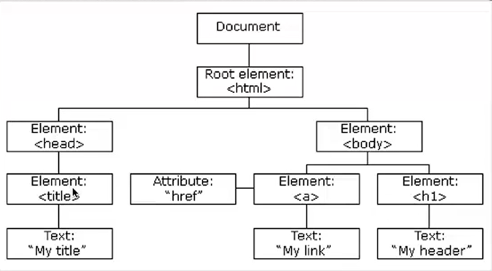

javascript是一种轻量级脚本语言，优势是能插入到html中运行，可以直接用<script>...</script>插入到，也能用<script src='exp.js'></script>插入
基础
输出
在网页中输出：document.write()
语法
- 分号：语句间的分割，可选项
- 标识符：字母、下划线和美元符号，关键字、保留字不能作为标识符
- 大小写敏感
- javascript会忽略多余的空格
变量和数据结构
变量：储存信息的容器
关键字：var
字符串：var string="hello";
数字：var int1=10;
数组：
var arr1 = [1,2,3,4,5];
var arr2 = ["a","b","c"];
var arr3 = new Array("hello","world");
var arr4[0] = 10;
var arr4[1] = 20;
var 布尔：var flag=true;
函数
异常捕获
异常：当javascript引擎执行javascript代码时发生了错误导致程序停止运行 异常抛出：异常产生时，将异常生成一个错误信息 异常捕获：
try{
发生错误的异常信息;
}
catch(err){
错误信息处理;
}demo:
try{
alert(str);//错误代码（str未定义初始值为null,无法返回信息）
}
catch(err){
alert(err);//输出错误信息
}
其中try里的代码无论是否错误都会执行，如果没有错误则catch不执行
事件
事件是可以被javascript监听到的行为
| 事件 | 描述 |
|---|---|
| onchange | HTML 元素改变 |
| onclick | 用户点击 HTML 元素 |
| onmouseover | 鼠标指针移动到指定的元素上时发生 |
| onmouseout | 用户从一个 HTML 元素上移开鼠标时发生 |
| onkeydown | 用户按下键盘按键 |
| onload | 浏览器已完成页面的加载 |
事件流
描述页面中接受事件的顺序
事件冒泡
由最具体的元素接收，逐级向上传播到最不具体的元素节点（文档）
事件捕获
由最不具体的元素先接收，最具体的元素最后接收
<head>
<body>
<div id="div">
<button id="btn1">按钮</button>
</div>
</body>
<head>事件冒泡：由按钮id的btn1先接收，再是button接收，然后div，再然后body,head一步步接收，最后接收整个document 事件排序：与冒泡正相反
DOM
简介
当网页被加载时，浏览器会创建文档加载模型(Document Object Model)

操作HTML
- 改变html输出流（注意不要在html加载完使用document.write()。这会覆盖该文档）
- 寻找元素：通过元素和标签名
- 改变HTML内容：使用属性InnerHTML
- 改变HTML属性：使用属性arribute
箭头函数表达式
箭头函数表达式是传统 函数表达式 的紧凑替代品，具有一些语义差异和使用方面的故意限制：
- 箭头函数没有自己的 bindings 到
this、arguments或super，并且不应用作 methods。 - 箭头函数不能用作 constructors。用
new调用它们会抛出TypeError。他们也无权访问new.target关键字。 - 箭头函数不能在其函数体内使用
yield，也不能创建为生成器函数。
语法
() => expression
param => expression
(param) => expression
(param1, paramN) => expression
() => {
statements
}
param => {
statements
}
(param1, paramN) => {
statements
}
支持参数内的 其余参数、默认参数 和 destructuring，并且始终需要括号：
(a, b, ...r) => expression
(a = 400, b = 20, c) => expression
([a, b] = [10, 20]) => expression
({ a, b } = { a: 10, b: 20 }) => expression
通过在表达式前加上 async 关键字前缀，箭头函数可以是 async。
async param => expression
async (param1, param2, ...paramN) => {
statements
}
描述
让我们逐步将传统的匿名函数分解为最简单的箭头函数。沿途的每一步都是一个有效的箭头函数。
注意：传统函数表达式和箭头函数除了语法之外还有更多差异。我们将在接下来的几小节中更详细地介绍他们的行为差异。
// Traditional anonymous function
(function (a) {
return a + 100;
});
// 1. Remove the word "function" and place arrow between the argument and opening body brace
(a) => {
return a + 100;
};
// 2. Remove the body braces and word "return" — the return is implied.
(a) => a + 100;
// 3. Remove the parameter parentheses
a => a + 100;
在上面的示例中，参数周围的括号和函数体周围的大括号都可以省略。但是，只有在某些情况下才能省略它们。
仅当函数具有单个简单参数时才可以省略括号。如果它有多个参数、没有参数或默认参数、解构参数或剩余参数，则需要在参数列表两边加上括号。
// Traditional anonymous function
(function (a, b) {
return a + b + 100;
});
// Arrow function
(a, b) => a + b + 100;
const a = 4;
const b = 2;
// Traditional anonymous function (no parameters)
(function () {
return a + b + 100;
});
// Arrow function (no parameters)
() => a + b + 100;
仅当函数直接返回表达式时才可以省略大括号。如果主体包含语句，则括号是必需的 — return 关键字也是如此。箭头函数无法猜测你想要返回什么或何时返回。
// Traditional anonymous function
(function (a, b) {
const chuck = 42;
return a + b + chuck;
});
// Arrow function
(a, b) => {
const chuck = 42;
return a + b + chuck;
};
箭头函数本身并不与名称相关联。如果箭头函数需要调用自身，请改用命名函数表达式。你还可以将箭头函数分配给变量，从而允许你通过该变量引用它。
// Traditional Function
function bob(a) {
return a + 100;
}
// Arrow Function
const bob2 = (a) => a + 100;
函数体
箭头函数可以具有表达式主体或通常的块主体。
在表达式主体中，仅指定单个表达式，该表达式成为隐式返回值。在块体中，必须使用显式 return 语句。
const func = (x) => x * x;
// expression body syntax, implied "return"
const func2 = (x, y) => {
return x + y;
};
// with block body, explicit "return" needed
使用表达式主体语法 (params) => { object: literal } 返回对象文字无法按预期工作。
const func = () => { foo: 1 };
// Calling func() returns undefined!
const func2 = () => { foo: function () {} };
// SyntaxError: function statement requires a name
const func3 = () => { foo() {} };
// SyntaxError: Unexpected token '{'
这是因为如果箭头后面的标记不是左大括号，JavaScript 只会将箭头函数视为具有表达式主体，因此大括号 ({}) 内的代码会被解析为语句序列，其中 foo 是 label，而不是 键入对象文字。
要解决此问题，请将对象文字括在括号中：
const func = () => ({ foo: 1 });
不能用作方法
箭头函数表达式只能用于非方法函数，因为它们没有自己的 this。让我们看看当我们尝试将它们用作方法时会发生什么：
"use strict";
const obj = {
i: 10,
b: () => console.log(this.i, this),
c() {
console.log(this.i, this);
},
};
obj.b(); // logs undefined, Window { /* … */ } (or the global object)
obj.c(); // logs 10, Object { /* … */ }
另一个涉及 Object.defineProperty() 的例子：
"use strict";
const obj = {
a: 10,
};
Object.defineProperty(obj, "b", {
get: () => {
console.log(this.a, typeof this.a, this); // undefined 'undefined' Window { /* … */ } (or the global object)
return this.a + 10; // represents global object 'Window', therefore 'this.a' returns 'undefined'
},
});
因为 class 的主体具有 this 上下文，所以箭头函数作为 类字段 靠近类的 this 上下文，并且箭头函数主体内的 this 将正确指向实例（或类本身，对于 静态字段）。但是，由于它是 closure，而不是函数自己的绑定，因此 this 的值不会根据执行上下文而改变。
class C {
a = 1;
autoBoundMethod = () => {
console.log(this.a);
};
}
const c = new C();
c.autoBoundMethod(); // 1
const { autoBoundMethod } = c;
autoBoundMethod(); // 1
// If it were a normal method, it should be undefined in this case
箭头函数属性通常被称为 “自动绑定方法”，因为与普通方法的等价物是：
class C {
a = 1;
constructor() {
this.method = this.method.bind(this);
}
method() {
console.log(this.a);
}
}
注意：类字段是在实例上定义的，而不是在原型上定义的，因此每个实例创建都会创建一个新的函数引用并分配一个新的闭包，这可能会导致比正常的未绑定方法使用更多的内存。
出于类似的原因，在箭头函数上调用时，call()、apply() 和 bind() 方法没有用处，因为箭头函数根据定义箭头函数的作用域建立 this，而 this 值不会根据函数的执行方式而改变 调用。
箭头函数没有自己的 arguments 对象。因此，在此示例中，arguments 是对封闭范围的参数的引用：
function foo(n) {
const f = () => arguments[0] + n; // foo's implicit arguments binding. arguments[0] is n
return f();
}
foo(3); // 3 + 3 = 6
注意：你不能在 严格模式 中声明名为
arguments的变量，因此上面的代码将是语法错误。这使得arguments的范围效应更容易理解。
在大多数情况下，使用 其余参数 是使用 arguments 对象的一个很好的替代方案。
function foo(n) {
const f = (...args) => args[0] + n;
return f(10);
}
foo(1); // 11
不能用作构造函数
箭头函数不能用作构造函数，并且在使用 new 调用时会抛出错误。他们也没有 prototype 属性。
const Foo = () => {};
const foo = new Foo(); // TypeError: Foo is not a constructor
console.log("prototype" in Foo); // false
不能用作生成器
yield 关键字不能在箭头函数主体中使用（除非在进一步嵌套在箭头函数中的生成器函数中使用）。因此，箭头函数不能用作生成器。
箭头前换行
箭头函数的参数和箭头之间不能包含换行符。
const func = (a, b, c)
=> 1;
// SyntaxError: Unexpected token '=>'
为了格式化，你可以在箭头后面放置换行符或在函数体周围使用圆括号/大括号，如下所示。你还可以在参数之间放置换行符。
const func = (a, b, c) =>
1;
const func2 = (a, b, c) => (
1
);
const func3 = (a, b, c) => {
return 1;
};
const func4 = (
a,
b,
c,
) => 1;
箭头的优先级
尽管箭头函数中的箭头不是运算符，但箭头函数具有特殊的解析规则，与常规函数相比，它们与 运算符优先级 的交互方式不同。
let callback;
callback = callback || () => {};
// SyntaxError: invalid arrow-function arguments
由于 => 的优先级低于大多数运算符，因此需要使用括号来避免 callback || () 被解析为箭头函数的参数列表。
callback = callback || (() => {});
示例
使用箭头函数
// An empty arrow function returns undefined
const empty = () => {};
(() => "foobar")();
// Returns "foobar"
// (this is an Immediately Invoked Function Expression)
const simple = (a) => (a > 15 ? 15 : a);
simple(16); // 15
simple(10); // 10
const max = (a, b) => (a > b ? a : b);
// Easy array filtering, mapping, etc.
const arr = [5, 6, 13, 0, 1, 18, 23];
const sum = arr.reduce((a, b) => a + b);
// 66
const even = arr.filter((v) => v % 2 === 0);
// [6, 0, 18]
const double = arr.map((v) => v * 2);
// [10, 12, 26, 0, 2, 36, 46]
// More concise promise chains
promise
.then((a) => {
// …
})
.then((b) => {
// …
});
// Parameterless arrow functions that are visually easier to parse
setTimeout(() => {
console.log("I happen sooner");
setTimeout(() => {
// deeper code
console.log("I happen later");
}, 1);
}, 1);
使用调用、绑定和应用
call()、apply() 和 bind() 方法可以按照传统函数的预期工作，因为我们为每个方法建立了范围：
const obj = {
num: 100,
};
// Setting "num" on globalThis to show how it is NOT used.
globalThis.num = 42;
// A simple traditional function to operate on "this"
const add = function (a, b, c) {
return this.num + a + b + c;
};
console.log(add.call(obj, 1, 2, 3)); // 106
console.log(add.apply(obj, [1, 2, 3])); // 106
const boundAdd = add.bind(obj);
console.log(boundAdd(1, 2, 3)); // 106
对于箭头函数，由于我们的 add 函数本质上是在 globalThis（全局）作用域上创建的，因此它会假设 this 是 globalThis。
const obj = {
num: 100,
};
// Setting "num" on globalThis to show how it gets picked up.
globalThis.num = 42;
// Arrow function
const add = (a, b, c) => this.num + a + b + c;
console.log(add.call(obj, 1, 2, 3)); // 48
console.log(add.apply(obj, [1, 2, 3])); // 48
const boundAdd = add.bind(obj);
console.log(boundAdd(1, 2, 3)); // 48
也许使用箭头函数的最大好处是像 setTimeout() 和 EventTarget.prototype.addEventListener() 这样的方法通常需要某种闭包、call()、apply() 或 bind() 以确保函数在正确的范围内执行。
对于传统的函数表达式，这样的代码不能按预期工作：
const obj = {
count: 10,
doSomethingLater() {
setTimeout(function () {
// the function executes on the window scope
this.count++;
console.log(this.count);
}, 300);
},
};
obj.doSomethingLater(); // logs "NaN", because the property "count" is not in the window scope.
使用箭头函数，可以更轻松地保留 this 范围：
const obj = {
count: 10,
doSomethingLater() {
// The method syntax binds "this" to the "obj" context.
setTimeout(() => {
// Since the arrow function doesn't have its own binding and
// setTimeout (as a function call) doesn't create a binding
// itself, the "obj" context of the outer method is used.
this.count++;
console.log(this.count);
}, 300);
},
};
obj.doSomethingLater(); // logs 11